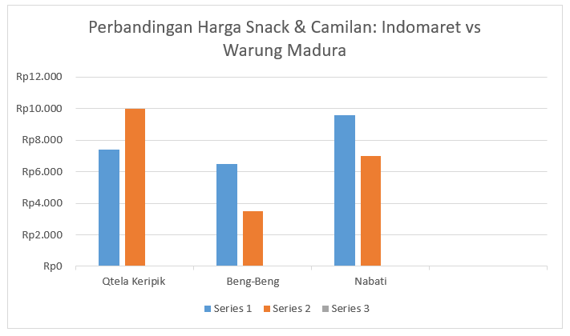

Studi Perbandingan Harga Snack dan Camilan di Indomaret dan Warung Madura: Analisis Faktor Pembeda dan Dampaknya bagi Konsumen
Oleh: I Gusti Ayu Cessa Jacinda
Latar Belakang:
Perkembangan ritel modern di Indonesia mengalami peningkatan pesat dalam dua dekade terakhir, ditandai dengan semakin banyaknya minimarket seperti Indomaret dan Alfamart di berbagai daerah. Kehadiran ritel modern ini menciptakan pola konsumsi baru di mana masyarakat mempertimbangkan aspek kenyamanan, promo, dan harga dalam berbelanja kebutuhan harian, termasuk snack dan camilan.
Di tengah persaingan tersebut, Warung Madura tetap mampu bertahan bahkan berkembang pesat berkat karakteristik operasionalnya yang fleksibel dan beroperasi 24 jam. Fleksibilitas harga, kedekatan sosial dengan pelanggan, serta akses tanpa batas waktu menjadi keunggulan utama Warung Madura.
Faktor harga menjadi aspek yang sangat menentukan dalam keputusan konsumen, terutama untuk produk cepat saji seperti snack dan camilan. Sementara itu, ritel modern seperti Indomaret memiliki harga yang lebih stabil karena mengikuti kebijakan pusat dan sering menawarkan promo tertentu. Perbedaan sistem penetapan harga ini menyebabkan adanya variasi harga yang cukup signifikan antara minimarket dan Warung Madura meskipun menjual produk yang sama.
Beberapa penelitian terdahulu memang telah membahas persaingan antara ritel modern dan tradisional, namun masih belum banyak yangsecara khusus meneliti perbandingan harga snack dan camilan di Indomaret dan Warung Madura. Oleh karena itu, penelitian ini penting dilakukan untuk mengisi celah penelitian tersebut dan memberikan gambaran nyata tentang perbedaan harga snack dan camilan di kedua jenis toko, sehingga dapat bermanfaat bagi konsumen maupun pelaku usaha dalam menentukan strategi penetapan harga.
Hasil Observasi: Data dari Lapangan
Perbandingan Harga Snack dan Camilan antara Indomaret dan Warung Madura
Berdasarkan hasil observasi lapangan, ditemukan bahwa terdapat perbedaan harga antara Indomaret dan Warung Madura pada beberapa produk snack dan camilan. Tiga produk yang diamati adalah Nabati, Beng-Beng, dan Qtela Keripik. Hasil perbandingan harga disajikan pada tabel berikut:
No
Produk
Harga Indomaret
Harga Warung Madura
Selisih
1
Qtela Keripik
Rp. 7400
Rp. 10000
Rp. 2600
2
Beng-Beng
Rp. 6500
Rp. 3500
Rp. 3000
3
Nabati
Rp. 9600
Rp. 7000
Rp. 2600
Dari tabel tersebut terlihat bahwa dua dari tiga produk lebih murah di Warung Madura, yaitu Nabati Richoco dan Beng-Beng Maxx, dengan selisih harga berkisar Rp2.600–Rp3.000. Sebaliknya, produk Qtela Keripik lebih murah di Indomaret dengan selisih Rp2.600. Temuan ini menunjukkan bahwa perbedaan harga antara kedua jenis toko cukup bervariasi tergantung produk, dan tidak selalu minimarket lebih mahal atau lebih murah.
Pergeseran Kurva Permintaan Es Buah

Grafik menunjukkan adanya perbedaan harga snack dan camilan antara Indomaret dan Warung Madura. Untuk produk Qtela, harga di Warung Madura lebih tinggi dibandingkan Indomaret. Namun pada produk Beng-Beng dan Nabati, Warung Madura justru menawarkan harga yang lebih murah. Perbedaan pola harga ini mendukung rumusan masalah penelitian, yaitu bahwa setiap toko memiliki kebijakan harga yang berbeda, sehingga harga tidak selalu konsisten lebih mahal atau lebih murah di salah satu toko. Temuan ini juga sesuai dengan tujuan penelitian untuk membandingkan harga dan melihat bagaimana variasi tersebut dapat memengaruhi pilihan konsumen.
Implikasi Perbedaan Harga terhadap Perilaku dan Keputusan Konsumen
Perbedaan harga antara Indomaret dan Warung Madura memiliki implikasi langsung terhadap keputusan konsumen dalam memilih tempat berbelanja. Konsumen yang sensitif terhadap harga cenderung memilih Warung Madura, terutama karena dua dari tiga produk yang diamati lebih murah di sana. Konsumen jenis ini memaksimalkan utilitas dengan mengurangi pengeluaran. Namun, keputusan konsumen tidak hanya dipengaruhi oleh harga. Berdasarkan teori utilitas dan perilaku konsumen, konsumen juga mempertimbangkan kenyamanan, jam operasional, dan preferensi pengalaman belanja. Hal ini menjelaskan mengapa meskipun beberapa produk lebih murah di Warung Madura, sebagian konsumen tetap memilih Indomaret karena menawarkan kenyamanan lebih, lingkungan ber-AC, tata letak produk yang rapi, serta metode pembayaran yang lengkap. Implikasi ini menunjukkan bahwa perbedaan harga dapat memengaruhi preferensi konsumen, tetapi keputusan akhir tetap merupakan kombinasi antara utilitas harga, kenyamanan, aksesibilitas, dan persepsi kualitas.
Refleksi Pribadi
Melalui penelitian perbandingan harga snack dan camilan antara Indomaret dan Warung Madura, saya menyadari bahwa perbedaan harga yang tampak sederhana ternyata dipengaruhi oleh faktor kompleks seperti sistem distribusi, strategi toko, dan perilaku konsumen. Proses observasi lapangan dan pengumpulan bukti struk melatih saya untuk mencatat data secara teliti, berpikir kritis, serta memastikan keakuratan informasi agar hasil penelitian dapat dipertanggungjawabkan. Penelitian ini juga membuat saya lebih peka sebagai konsumen, terbiasa membandingkan harga, dan memahami bahwa keputusan belanja tidak hanya ditentukan oleh harga, tetapi juga kenyamanan dan pengalaman belanja, sehingga membantu saya menghubungkan teori ekonomi dengan praktik sehari-hari.